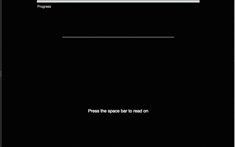

In self-raced reading experiments, participants read stimuli (e.g., words,
sentences, or paragraphs). It is called self-paced because
participants control the timing of how each part of the sentence stimulus is displayed.
Don't worry, you don't need to program the experimental procedure yourself.
We (or specifically, Hal Tily, now at Nuance Technology) have programmed a
web-based self-paced reading app. This app, CrowdExp-SPR will display your
stimuli, randomize their presentation, create a
Latin Square Design
(we'll learn more about what this later), record reading times and more.
More about that ... now.
What participants will see
Here is an example of what participants will see when they take your
experiment (this particular display is specific to CrowdExp-SPR). For
the participants, the stimulus sentence will advance word-by-word with each
press of the SPACE button.

CrowdExp-SPR will record the times between button presses. Those are
the reading times that we will analyze to test our predictions.
This particular type of self-paced reading is called moving-window
word-by-word self-paced reading. The moving-window
part refers to the fact that only one word is shown
at each time and that pressing SPACE both advances to the next word
and also hides the previous word. This particular type of self-paced
reading also employs an uninformative mask: alternative
versions of self-paced reading might show the word boundaries in the
mask (e.g., "- --- --- ----- -- --- -----.").
Notice also the progress bar at the top of the page, telling participants
how many more sentences they still have to read before the experiment
is over.
Speed vs. Accuracy
One challenge whenever experimenters want to measure how fast
we can do something (like how fast we can read) is that participants
might get carried away. For example, someone might just keep pressing
the SPACE bar as fast as they can. That will lead to maximally fast
reading times and make it impossible to detect any effects on those
reading times.
So, to prevent this problem, we want to make sure that participants
in our experiment actually read and understand the sentences
we show them. This is achieved by
comprehension questions.
By default, CrowdExp-SPR will ask one yes/no comprehension questions after
each stimulus. For the example stimulus given above, we might ask
the following question:
CrowdExp-SPR will record both the answer (yes/no)—and thus its accuracy
(correct/incorrect)—and the reaction time it took to answer the
question.
What behavior (outcome variables) will CrowdExp-SPR record?
CrowdExp-SPR will return word-by-word reading times, as well as the
reaction time and accuracy of the comprehension question for each
sentence. The word-by-word reading times will be your primary
outcome variable.
That is, your experiment will use reading times to test the predictions
of theories about language processing.
Any effect that leads to changes in processing speed, and thus
word-by-word reading times, can in theory be detected in the self-paced
reading paradigm. For example,
it typically takes between 150-450msecs to read a word (and press the
SPACE key). Words will be read more or less quickly, depending on their
length, frequency, etc., or because they are surprising in context.
Beyond the reading times, some hypotheses also make predictions about
the answer reaction time or accuracy. But even if we don't directly
test predictions about these alternative outcome variables, answer
accuracy is standardly used in order to exclude participants who did
not read the sentences carefully. For example, a common exclusion
criterion is to exclude from the analysis all data from any participant
who did not answer at least 85% of the questions correctly. We will discuss
more about exclusions in the Analysis section.
Now that you have a bit of an idea of the procedure we will be employing,
it's time to learn more about the structure of experiments and
important constraints on the stimuli materials.